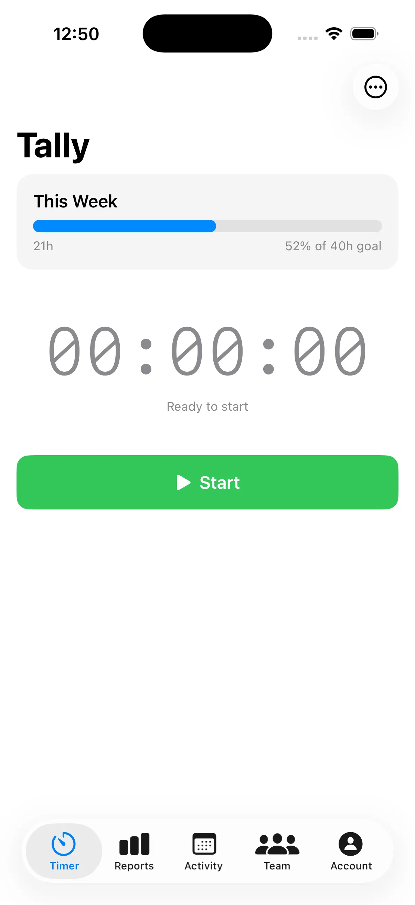
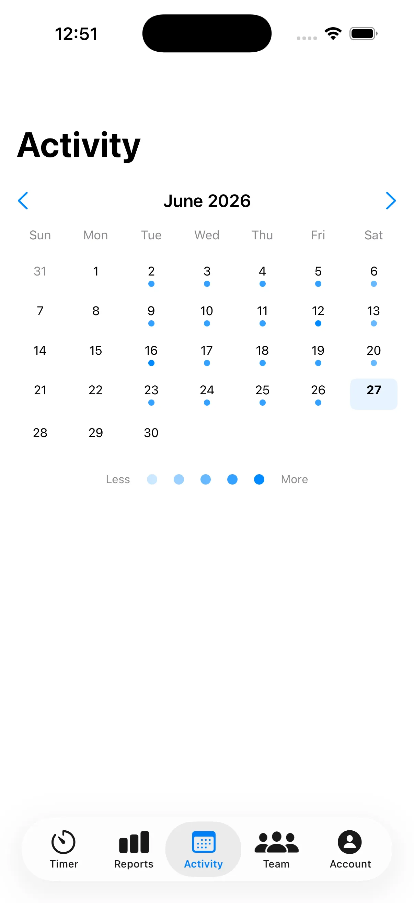
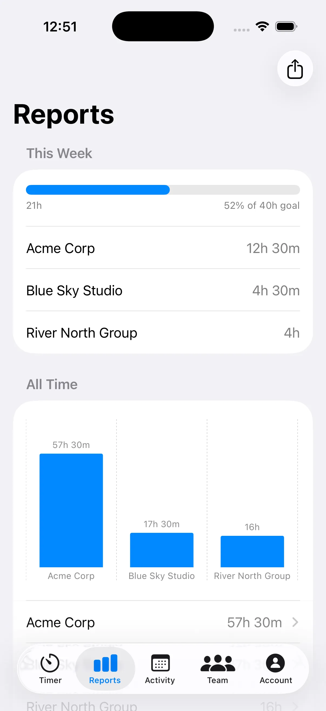
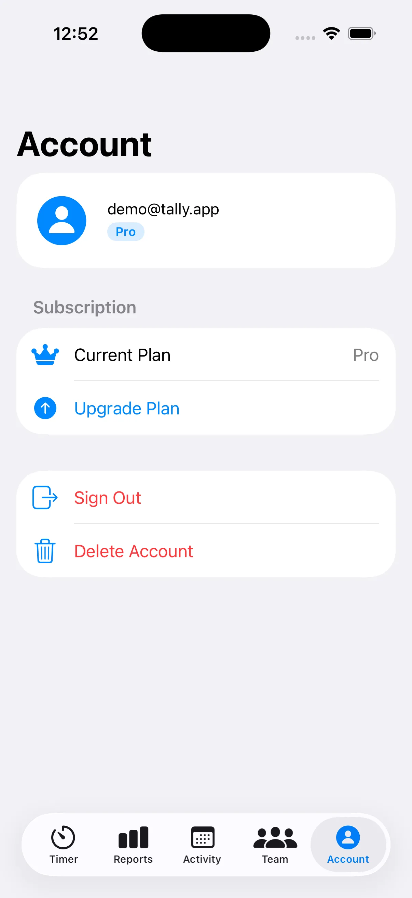
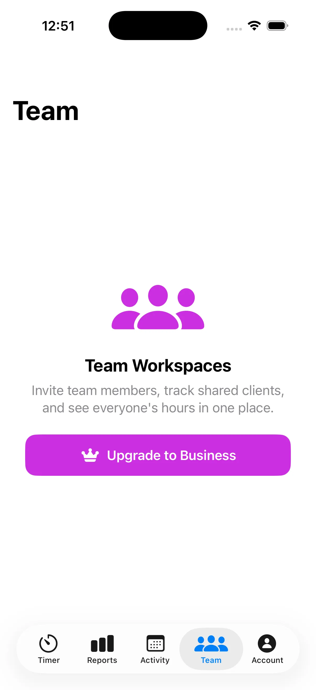

George Clinkscales Jr.
George Clinkscales Jr.Tally — Time Tracker
Cross-platform time tracker for freelancers and small teams — native iOS, Apple Watch, Mac, and a React web dashboard on one shared backend. Free to start, $9.99 one-time for Pro, or $4.99/month for Business with team collaboration and Stripe invoicing.
The Problem
Freelancers and small teams needed a way to track billable hours and generate invoices without paying $10–20/month for features they'll never use. The goal was one app that works everywhere — phone, watch, laptop, browser — with a pricing model that matches how people actually use it: free to try with no time limit, $9.99 once for solo professionals who want everything, and $4.99/month for teams that need collaboration and invoicing.
Try It Live
iOS App

Timer — one-tap tracking with client and project tagging, runs in background via SwiftData.

Calendar — visual day and week breakdown of logged sessions across all clients.

Reports — earnings summary by client with CSV export, synced to the web dashboard.

Account — subscription status, cross-platform sync, and settings all in one place.

Workspace — Business tier team management, handled by StoreKit on iOS and Stripe on web.
The Approach
Tally is a native iOS app (iPhone, Apple Watch, Mac via Catalyst) paired with a React web dashboard, both running on a shared Supabase backend. Buying Pro on iOS unlocks the web too — StoreKit and Stripe both write to the same is_pro flag in the database, so the app never has to check two payment systems.
Sessions are stored locally in SwiftData so the app works offline and opens instantly. Supabase syncs when the network is available. The Business tier adds team workspaces with admin and member roles enforced at the database level via row-level security — not just in the UI — plus Stripe invoicing and a 7-day free trial.
The iOS app integrates deeply with the OS: ActivityKit powers a Live Activity on the lock screen and Dynamic Island so the running timer is always visible without opening the app. WidgetKit adds a home screen widget in small and medium sizes. App Intents expose Siri shortcuts for starting and stopping a timer, and a Focus Mode filter lets Tally automatically activate when a work focus is on.
Stripe webhooks, transactional email, and team invites all run in Supabase Edge Functions (Deno), so there's no Node server to maintain or deploy. The web dashboard is built with React and Vite — a time tracker has no SEO requirements, so it deploys as static files on Vercel with no framework overhead.
The Outcome
Tally is the most complex thing I've built — not because any single piece is hard, but because four platforms, two payment systems, and a shared backend require every layer to be correct at once. The web app is live on Vercel; the iOS app is live on the App Store for iPhone, Apple Watch, and Mac. Free to start, $9.99 one-time for Pro, and $4.99/month for Business — against competitors that start at $10–20/month with no free tier and no one-time option.